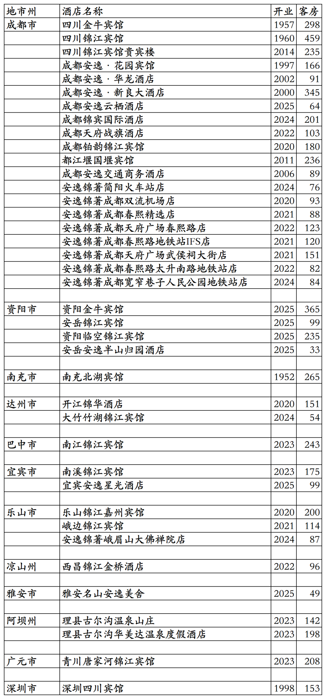
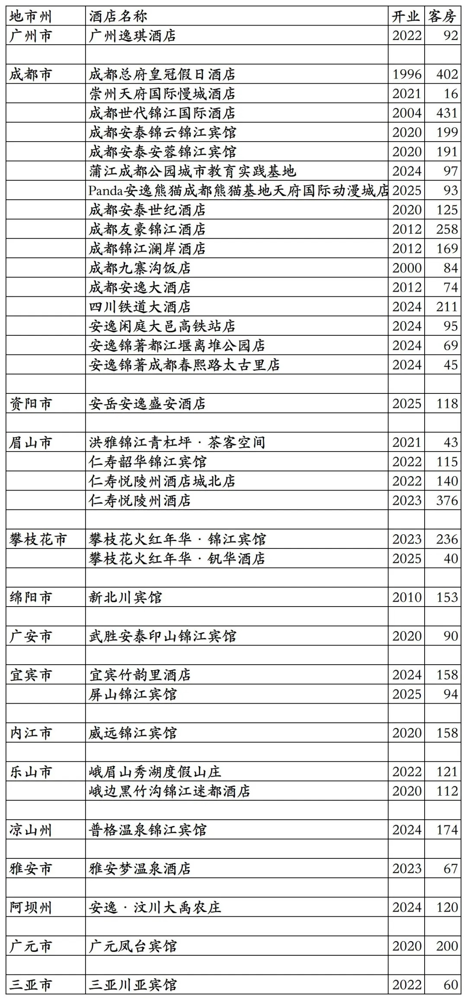
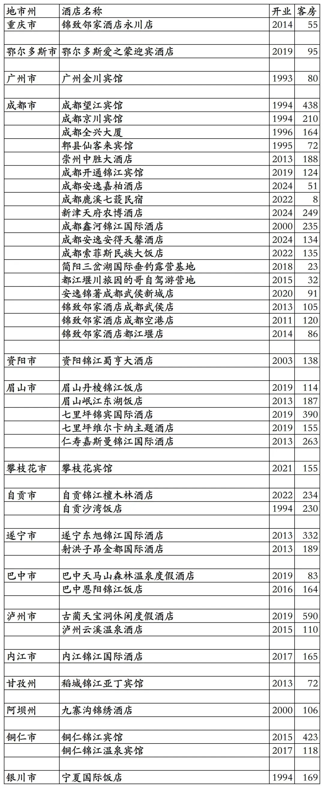

安逸酒店集团旗下开业及退出酒店统计，统计数据截至2025年12月31日。
客房数据主要来自于安逸酒店官方平台与OTA，部分酒店客房数量打过酒店电话核实，记录的是酒店员工告知的客房数量。
安逸旗下品牌有锦江、金牛宾馆、四川宾馆、锦著、安逸(安逸酒店集团2023年从岷山酒店集团收购四川安逸连锁酒店公司和安逸酒店品牌)、安逸度假、安逸熊猫酒店、安逸农庄等品牌。还有两家安逸为业主，加盟洲际、温德姆旗下品牌的酒店。
不含顾问式管理及咨询管理酒店，不含四川旅投冰川文旅(原四川航空冰川文旅)旗下甘孜州翔云酒店管理有限责任公司旗下3家酒店，四川旅投冰川文旅已划归四川旅投，但旗下酒店尚未划归安逸。
安逸会会员计划，分为银会员、金会员、铂金会员三个等级。
目前安逸在四川、广东、海南有酒店。
截至2025年12月31日，在安逸酒店官方平台、OTA平台查询到的酒店加上几家不上线安逸酒店官方平台也不上线OTA平台的酒店，我一共才查询到75家安逸旗下酒店，其中有几家酒店目前停业中，还有几家酒店酒店不对外开放。
中国旅游饭店业协会经过严格缜密的数据统计、分析与核实，发布的2021-2024年度中国饭店集团60强榜单中，统计的安逸(2021年榜单为四川旅投锦江酒店公司旗下酒店数量。安逸酒店集团于2021年12月29日揭牌，将四川旅投锦江酒店公司旗下酒店、四川旅投集团旗下其它酒店以及四川省直机关/省属企业经营性酒店一共157家统一纳入安逸酒店集团旗下)开业酒店与客房数量如下：
2021年172家酒店32526间客房，
2022年458家酒店62744间客房，
2023年581家酒店78752间客房，
2024年613家酒店80499间客房。
实在不知道中国旅游饭店业协会严格缜密统计核实的其余500多家安逸旗下酒店开在哪里，估计是开在月球上或是火星上的可能性比较大一些，地球上能再找出来100家酒店就不错了。
不知安逸酒店集团能不能提供出旗下已开业的600多家酒店名单。
开业：新酒店开业或是其它酒店翻牌加入时间；
客房：客房数量。
个人精力有限，部分酒店开业/退出/下线时间以及客房数量难免有错误，欢迎各位告知指正，谢谢！
安逸酒店官方平台参加安逸会会员计划的39家酒店。

安逸酒店官方平台外其余36家酒店。

历年退出/关停酒店。锦致邻家武侯店后来升级为安逸锦著武侯新城店，锦致邻家空港店后来升级为安逸锦著双流机场店。

01、锦江国内高端酒店开业及退出统计
02、华住国内高端酒店开业及退出统计
03、首旅高端品牌开业及退出酒店统计
04、格林高端品牌开业及退出酒店统计
05、东呈高端酒店开业及退出统计
06、尚美高端品牌开业及退出酒店统计
07、开元开业及退出酒店统计
08、万达开业及退出酒店统计
09、君亭开业及退出酒店统计
10、雷迪森开业及退出酒店统计
11、凤悦开业及退出酒店统计
12、中旅国内开业及退出酒店统计
13、金陵开业及退出酒店统计
14、格兰云天开业及退出酒店统计
15、中维开业及退出酒店统计
16、华天开业及退出酒店统计
17、凯莱开业及退出酒店统计
18、绿地开业及退出酒店统计
19、岭南开业及退出酒店统计
20、黄龙开业及退出酒店统计
21、厦门建发开业及退出酒店统计
22、厦门佰翔开业及退出酒店统计
23、福建旅发开业及退出酒店统计
24、远洲旅业开业及退出酒店统计
25、乔治莫兰迪开业酒店统计
更多的国内酒店统计、年度酒店排行、酒店常识、酒店行业资讯、酒店集团、航空常识、沈阳旅游、沙发客、打油诗等相关内容可以到我的微信公众号里查看。